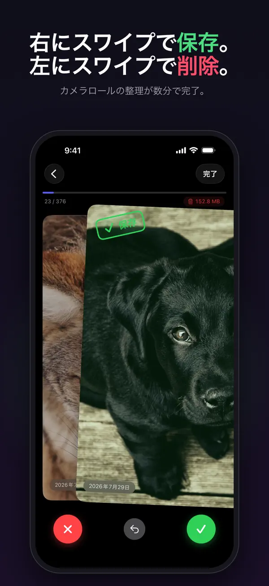
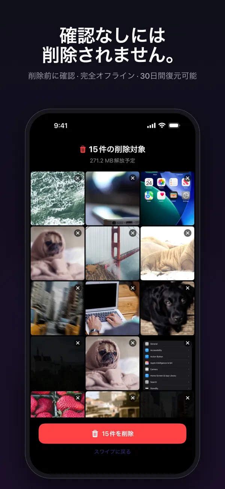

iPhone をすっきり。
左スワイプで削除、右スワイプで残す。
Swiped は iPhone と iPad の写真・動画整理アプリです。何千枚もの写真を数分で整理。広告なし、サブスクなし、アカウント不要。写真が端末の外に出ることはありません。
- 無料
- 広告なし
- サブスクなし
- アカウント不要
- 写真は iPhone の外に出ません




使い方
- 1アルバム、またはカメラロール全体を選ぶ。
- 2右で残す、左で削除。いつでも取り消せます。
- 3選んだ写真を確認して、容量を空ける。
必要なものだけ
プライバシー重視
すべて iPhone の中で行われます。Swiped はデータを一切収集しません（App Store の「データの収集なし」）。
安心して削除
選んだ写真を確認するまで何も削除されません。削除した写真は「最近削除した項目」に 30 日間残ります。
大きなファイルを探す
写真・動画・スクリーンショット、日付、サイズで絞り込み、容量を食うファイルを見つけられます。
容量カウンター
スワイプするたびに、空く容量がリアルタイムで表示されます。
無制限の取り消し
気が変わったら、好きなだけ前のカードに戻れます。
続きはあとで
スワイプごとに自動保存。明日また続きから始められます。
よくある質問
Swiped は本当に無料？
はい。スワイプ、確認、削除はすべて無料で、広告もサブスクもアカウントもありません。将来、買い切りの追加機能が登場する可能性はありますが、サブスクにはしません。
写真は iPhone の外に送られますか？
いいえ。Swiped は iPhone の中だけで写真を扱います。サーバーはなく、データも収集しません。
削除した写真はどうなりますか？
確認するまで何も削除されません。その後 iOS が「最近削除した項目」に移し、30 日間は復元できます。
iCloud 写真でも使えますか？
はい。iCloud に保存された写真も表示され、Swiped で削除すると「写真」アプリと同じくすべての端末から削除されます。
対応機種は？
iOS 16 以降の iPhone と iPad。9 言語に対応しています。
Android 版はありますか？
ありません。Swiped は iPhone と iPad 専用です。Android や App Store にある似た名前のアプリとは関係ありません。
Swiped: 写真整理＆写真削除
App Store からダウンロードiPhone · iPad · 無料